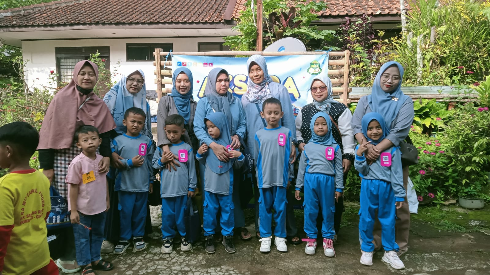

Mengenal lebih dekat visi, sejarah, legalitas resmi, dan jajaran pengurus Yayasan Mutiara Ilmu.

Yayasan Mutiara Ilmu didirikan dengan niat tulus untuk menghadirkan sarana pendidikan keagamaan yang inklusif, berkualitas, dan berakar pada nilai-nilai luhur Al-Qur'an dan Sunnah di tengah masyarakat. Berawal dari majelis taklim pengajian ibu-ibu dan halaqah tahfidz anak-anak sekitar lingkungan Cibiru, yayasan ini terus tumbuh berkembang menjadi lembaga pendidikan yang terorganisir rapi dan berbadan hukum resmi.
Hingga saat ini, Yayasan Mutiara Ilmu menaungi tiga pilar utama aktivitas umat: Raudhatul Athfal (RA) untuk pembentukan pondasi adab anak usia prasekolah, Diniyah Takmiliyah Awaliyah (DTA) untuk memperdalam khazanah fiqih dan tahfidz anak usia sekolah dasar di waktu sore, serta Majelis Ta'lim sebagai sarana silaturahmi keilmuan para orang tua dan masyarakat umum.
"Terwujudnya lembaga pendidikan dan dakwah Islam yang unggul, terpercaya, serta melahirkan generasi Qur'ani yang berakhlak mulia, cerdas, mandiri, dan berwawasan luas."
Sesuai ketentuan hukum yang berlaku di Republik Indonesia, Yayasan Mutiara Ilmu memiliki kelengkapan berkas legalitas dan izin operasional resmi agar masyarakat dapat memastikan keaslian dan kredibilitas lembaga kami.
Nomor Surat Keputusan Menteri Hukum dan Hak Asasi Manusia Republik Indonesia:
Surat Izin Operasional Penyelenggaraan Pendidikan Keagamaan Islam Kemenag:
Akta Pendirian Yayasan dibuat di hadapan Notaris berwenang:
Nomor Pokok Wajib Pajak terdaftar atas nama Yayasan Mutiara Ilmu:
Peringkat dan sertifikasi penjaminan mutu BAN-PAUD dan Pendidikan Islam:
Tercatat resmi di Kecamatan Cibiru, Kota Bandung:
Jajaran dewan pembina, pengurus harian, dan kepala unit pendidikan yang berdedikasi mengemban amanah pengelolaan Yayasan Mutiara Ilmu.

Ketua Dewan Pembina
Pakar Pendidikan Islam & Pengasuh Majelis

Ketua Yayasan
Penanggung Jawab Operasional & Kebijakan

Sekretaris Yayasan
Administrasi, Legalitas & Kemitraan

Bendahara Yayasan
Manajemen Keuangan & Akuntabilitas Donasi

Kepala Unit RA
Raudhatul Athfal Mutiara Ilmu

Kepala Unit DTA
Madrasah Diniyah Takmiliyah

Ketua Majelis Ta'lim
Majelis Ta'lim Mutiara Hati
Kantor sekretariat Yayasan Mutiara Ilmu senantiasa terbuka menerima kunjungan calon wali santri, donatur, dan masyarakat umum.